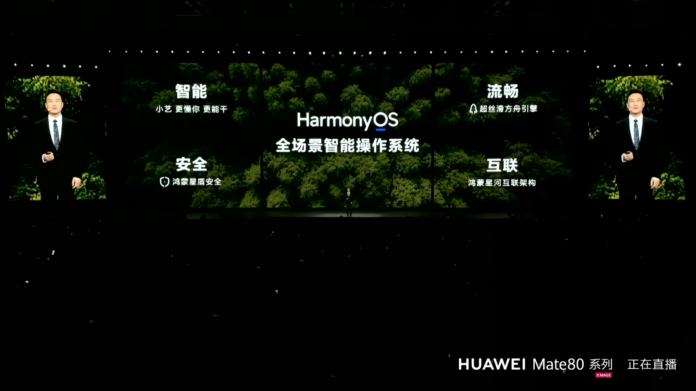
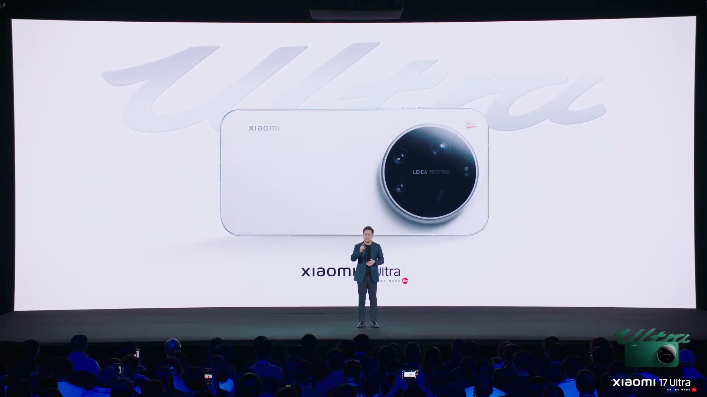
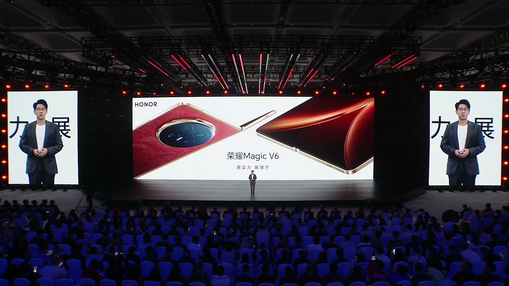
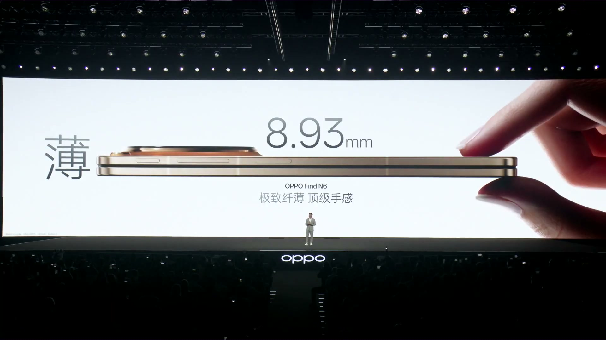

심층 리포트
기술을 읽는 시간
신제품 발표에서 주목할 만한 기술과 변화를 살펴봅니다.
최근 발행2026-03-30
발표회 기록
리포트 목록
전체 7개 기사
화웨이 2026 봄 신제품 발표회 보고서

Xiaomi 17 Ultra 출시 보고서

Honor Magic V6 출시 보고서

OPPO Find N6 출시 보고서
검색 결과가 없습니다
다른 검색어를 입력하거나 필터를 초기화해 보세요.